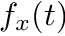
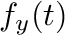
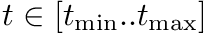
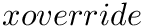
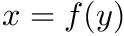
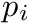
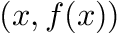
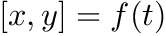
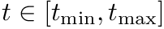

|
JKQTPlotter
an extensive Qt5 Plotter framework (including a feature-richt plotter widget, a speed-optimized, but limited variant and a LaTeX equation renderer!), written fully in C/C++ and without external dependencies
|
|
JKQTPlotter
an extensive Qt5 Plotter framework (including a feature-richt plotter widget, a speed-optimized, but limited variant and a LaTeX equation renderer!), written fully in C/C++ and without external dependencies
|
| ►Nsfdnormalize | |
| CContourPlotAnimator | |
| CFormWithJKQTPlotter | |
| ►CJKQTBasePlotter | Base class for 2D plotter classes (used by the plotter widget JKQTPlotter) |
| CJKQTBasePlotterStyle | Support Class for JKQTBasePlotter, which summarizes all proeprties that define the visual styling of a JKQTBasePlotter |
| CJKQTFastPlotter | Speed optimized plotter class |
| CJKQTFPimageOverlayPlot | Plots an image overlay, i.e. a boolean image where each true pixel is drawn with a given color and the false pixels are transparent |
| CJKQTFPimagePlot | Plots a given grayscale image with a given color palette |
| CJKQTFPLinePlot | Simple line plot for JKQTFastPlotter |
| CJKQTFPPlot | Base class for all plots that may be plotted by JKQTFastPlotter |
| CJKQTFPQImagePlot | Plot of a QImage |
| CJKQTFPQOverlayLinearGridPlot | Plot a horizontal scale bar |
| CJKQTFPQScaleBarXPlot | Plot a horizontal scale bar |
| CJKQTFPRGBImageOverlayPlot | Plots 1,2 or 3 given grayscale images as an overlay plot, where each channel is drawn as one color channel (e.g. red, green or blue) |
| CJKQTFPVBarPlot | Simple vertical bar plot for JKQTFastPlotter |
| CJKQTFPVCrossPlot | Simple plot that draws a cross for every datapoint |
| CJKQTFPXRangePlot | Plot a range of x values |
| CJKQTFPYRangePlot | Plot a range of x values |
| ►CJKQTMathText | This class parses a LaTeX string and can then draw the contained text/equation onto a QPainter |
| CJKQTMathTextLabel | A QLabel-derived class that draws an equation with LaTeX markup using JKQTMathText |
| CJKQTPAdaptiveFunctionGraphEvaluator | Adaptive drawing of a function graph, specified by two function  and  evaluated over a parameter range  |
| CJKQTPArrayScopedPointer | This class ensures that the given pointer is freed when the class is destroyed |
| CJKQTPAutoOutputTimer | RAII construct that times its lifetime, outputting properly indented qDebug()-message |
| CJKQTPBarGraphBase | This is a base-class for all bar graphs with vertical or horizontal orientation (the orientation is implemented in dervied classes!) |
| CJKQTPBarHorizontalErrorGraph | This implements a bar graph with bars starting at  to  and error indicator |
| CJKQTPBarHorizontalGraph | This implements a bar graph with bars starting at to |
| CJKQTPBarHorizontalStackableGraph | This implements a bar graph with bars starting at  to to  Optionally several graphs of this type may be stacked on top of each other Optionally several graphs of this type may be stacked on top of each other |
| CJKQTPBarVerticalErrorGraph | This implements a bar graph with bars starting at to and error indicator |
| CJKQTPBarVerticalGraph | This implements a bar graph with bars starting at to |
| CJKQTPBarVerticalStackableGraph | This implements a bar graph with bars starting at to Optionally several graphs of this type may be stacked on top of each other |
| CJKQTPBoxplotHorizontalElement | This implements a horizontal (notched) boxplot where the data is directly given to the object and not stored in a column, as in JKQTPBoxplotVerticalGraph |
| CJKQTPBoxplotHorizontalGraph | This implements horizontal boxplots, optionally also a notched boxplot |
| CJKQTPBoxplotVerticalElement | This implements a single vertical (notched) boxplot as a "geometric element", where the data is directly given to the object and not stored in a column, as in JKQTPBoxplotVerticalGraph |
| CJKQTPBoxplotVerticalGraph | This implements vertical boxplots, optionally also a notched boxplot |
| CJKQTPCADrawModeComboBox | QComboBox which shows JKQTPCADrawMode |
| CJKQTPCALabelTypeComboBox | QComboBox which shows JKQTPCALabelType |
| CJKQTPColorPaletteSingleColorLinSegment | For building palettes from linear segments of single colors using JKQTPBuildColorPaletteLUTLinSegmentsSorted() and JKQTPBuildColorPaletteLUTLinSegments() |
| CJKQTPColorPaletteStyleAndToolsMixin | If a class is derived from this class, it may use color bars |
| CJKQTPColorPaletteWithModifierStyleAndToolsMixin | If a class is derived from this class, it may use color bars that have 2 axes (one "data"/color axis and one "modifier" axis) |
| CJKQTPColumn | Internally stores information about one data column. See JKQTPDatastore for more information |
| CJKQTPColumnBackInserter | Iterator, which allows to insert into a column of a JKQTPDatastore |
| CJKQTPColumnConstIterator | Iterator over the data in the column of a JKQTPDatastore |
| CJKQTPColumnContourPlot | Class for a contour plots (same as JKQTPContourPlot) of images stored in a JKQTPDatastore column |
| CJKQTPColumnIterator | Iterator over the data in the column of a JKQTPDatastore |
| CJKQTPColumnMathImage | Class to plot an image from an 2-dimensional array of values stored in a column of the datastore |
| CJKQTPColumnOverlayImageEnhanced | Class to plot an image from an 2-dimensional array of boolean values: alle true values are plotted in a given color, while the false pixels are drawn in another (default: transparent) |
| CJKQTPColumnRGBMathImage | Like JKQTPRGBMathImage but reads images from columns of the datastore |
| CJKQTPContourPlot | Class for a contour plot |
| CJKQTPCoordinateAxis | This virtual class is the base for any type of coordinate axis, to be drawn by JKQTBasePlotter |
| CJKQTPCoordinateAxisStyle | Support Class for JKQTPCoordinateAxis, which summarizes all proeprties that define the visual styling of a JKQTPCoordinateAxis |
| CJKQTPDatastore | This class manages data columns (with entries of type double ), used by JKQTPlotter/JKQTBasePlotter to represent data for plots |
| CJKQTPDatastoreItem | This represents one chunk of memory which can represent one or more columns of data for JKQTBasePlotter. See JKQTPDatastore for more information |
| CJKQTPDatastoreModel | QAbstractTableModel descendent that allows to view data in a JKQTPDatastore |
| CJKQTPEmfEngineAdapter | |
| CJKQTPEnhancedDoubleSpinBox | Enhanced QDoubleSpinBox |
| CJKQTPEnhancedPainter | This class extends the QPainter |
| CJKQTPEnhancedSpinBox | Enhanced QDoubleSpinBox |
| CJKQTPEnhancedTableView | This class extends the QTableView |
| CJKQTPErrorPlotstyleComboBox | QComboBox which shows JKQTPErrorPlotstyle |
| ►CJKQTPEvaluatedFunctionGraphBase | Base class for graph classes that evaluate a mathematical function (e.g. defined as a C-function), using an adaptive plotting algorithm from JKQTPAdaptiveFunctionGraphEvaluator |
| CJKQTPEvaluatedFunctionWithErrorsGraphBase | Extends JKQTPEvaluatedFunctionGraphBase with some basic properties (e.g. function parameters) for a second function that calculates an error (for drawing error indicators) |
| CJKQTPEvaluatedFunctionWithErrorsGraphDrawingBase | This class extends JKQTPEvaluatedFunctionWithErrorsGraphBase with functions to draw the graphs and set the drawing style |
| CJKQTPFilledCurveGraphBase | Base class for filled curve graphs like e.g. JKQTPFilledCurveXGraph |
| CJKQTPFilledCurveXErrorGraph | This implements filled curve plots with y errors where the area is filled between the plot line and the x-Axis |
| CJKQTPFilledCurveXGraph | This implements filled curve plots where the area is filled between the plot line and the x-Axis |
| CJKQTPFilledCurveYErrorGraph | This implements filled curve plots with y errors where the area is filled between the plot line and the x-Axis |
| CJKQTPFilledCurveYGraph | This implements filled curve plots where the area is filled between the plot line and y-Axis |
| CJKQTPFilledHorizontalRangeGraph | This implements filled curve plots where the area is filled between two data columns for each y-value |
| CJKQTPFilledVerticalRangeGraph | This implements filled curve plots where the area is filled between two data columns for each x-value |
| CJKQTPFinalAct | C++11 finally construct (executes a callable-object when the edestructor is executed) |
| CJKQTPFunctorLineGraphBase | Extends JKQTPEvaluatedFunctionWithErrorsGraphDrawingBase with the capabilities to define functions from C++-functors of type jkqtpSimplePlotFunctionType or jkqtpPlotFunctionType |
| CJKQTPGeoArc | This JKQTPPlotObject is used to draw an arc |
| CJKQTPGeoArrow | This convenience specialisation of JKQTPGeoLine is used to draw a line with decorations (e.g. arrows) |
| CJKQTPGeoBaseDecoratedHeadLine | This JKQTPPlotObject is used as base class for geometric drawing elements that consist of lines with one decorated end (i.e. no filling of any kind is done) |
| CJKQTPGeoBaseDecoratedLine | This JKQTPPlotObject is used as base class for geometric drawing elements that consist of lines with decorated ends (i.e. no filling of any kind is done) |
| CJKQTPGeoBaseFilled | This JKQTPPlotObject is used as base class for geometric drawing elements that only consist of lines (i.e. no filling of any kind is done) |
| CJKQTPGeoBaseLine | This JKQTPPlotObject is used as base class for geometric drawing elements that only consist of lines (i.e. no filling of any kind is done) |
| CJKQTPGeoChord | This JKQTPPlotObject is used to draw a chord |
| CJKQTPGeoEllipse | This JKQTPPlotObject is used to draw an ellipse |
| CJKQTPGeoInfiniteLine | This JKQTPPlotObject is used to draw an infinite line |
| CJKQTPGeoLine | This JKQTPPlotObject is used to draw a line, optionally line-end decorations (aka arrows) are pssible, but switched off by default |
| CJKQTPGeoPie | This JKQTPPlotObject is used to draw a pie |
| CJKQTPGeoPolygon | This JKQTPPlotObject is used to draw a polygon |
| CJKQTPGeoPolyLines | This JKQTPPlotObject is used to draw a poly line |
| CJKQTPGeoRectangle | This JKQTPPlotObject is used to draw a rectangle |
| CJKQTPGeoSymbol | This virtual JKQTPGraph descendent may be used to display a single symbol (marker) |
| CJKQTPGeoText | This JKQTPPlotObject is used to display text. It uses the JKQTMathText class in order to display LaTeX formulas |
| CJKQTPGraph | This virtual base class of the (data-column based) graphs, which are part of a JKQTPlotter plot and which use the coordinate system of the JKQTPlotter (i.e. the two coordinate axes getXAxis() and getYAxis()) as basis for the graphs |
| CJKQTPGraphBoxplotStyleMixin | Styling Mix-In for Boxplots |
| CJKQTPGraphDecoratedHeadLineStyleMixin | This Mix-In class provides setter/getter methods, storage and other facilities for the graph line style of lines with a decorator (i.e. an arrow) at their head. It extends JKQTPGraphLineStyleMixin |
| CJKQTPGraphDecoratedLineStyleMixin | This Mix-In class provides setter/getter methods, storage and other facilities for the graph line style of lines with decorators (i.e. arrows) at their ends. It extends JKQTPGraphLineStyleMixin |
| CJKQTPGraphErrorStyleMixin | This mix-in class assembles all styling properties applicable to error indicators |
| CJKQTPGraphFillStyleMixin | This Mix-In class provides setter/getter methods, storage and other facilities for the graph filling (NOT the symbol filling though!) |
| CJKQTPGraphLineAndFillStyleMixin | This Mix-In class provides setter/getter methods, storage and other facilities for the graph line and fill style |
| CJKQTPGraphLineStyleMixin | This Mix-In class provides setter/getter methods, storage and other facilities for the graph line style |
| CJKQTPGraphsModel | Data model with all plots ina JKQTBasePlotter (+ allows to switch them visible/invisible) |
| CJKQTPGraphSymbolStyleMixin | This Mix-In class provides setter/getter methods, storage and other facilities for the graph symbols style |
| CJKQTPGraphTextStyleMixin | This Mix-In class provides setter/getter methods, storage and other facilities for text in graphs |
| CJKQTPGraphViolinplotStyleMixin | Styling Mix-In for Violinplots |
| CJKQTPGridPrintingItem | Used to represent the position of other graphs in Saving and Printing Graphs |
| CJKQTPHighResTimer | This class implements a high resolution timer capable of measuring time intervals with a resolution of some microseconds |
| CJKQTPHorizontalAxis | Implements a horizontal axis, based on JKQTPCoordinateAxis (for most of documentation: see JKQTPCoordinateAxis) |
| CJKQTPHorizontalIndependentAxis | Implements a position-indipendent horizontal axis, based on JKQTPCoordinateAxis (for most of documentation: see JKQTPCoordinateAxis) |
| CJKQTPHorizontalRange | Simply marks a range (and possibly a centerline) in a plot. This may be used to display e.g. mean +/- stddev or a range of interest, or the range of good values, .. |
| CJKQTPImage | Class to plot an image from a QImage object |
| CJKQTPImageBase | Base class for plotting an image |
| CJKQTPImageModifierModeComboBox | QComboBox which shows JKQTPMathImageModifierMode |
| ►CJKQTPImageTools | Tool structure that summarizes several static properties of JKQTPlotters palette system, also provides functions to work with palettes and register user-defined palettes |
| CJKQTPImpulsesGraphBase | This is a base class for all impulse graphs |
| CJKQTPImpulsesHorizontalErrorGraph | This implements an impulse plot with impulses in direction of the X axis (i.e. from x=0 to x=f(y) ) |
| CJKQTPImpulsesHorizontalGraph | This implements an impulse plot with impulses in direction of the X axis (i.e. from y=0 to y=f(x) ) |
| CJKQTPImpulsesVerticalErrorGraph | This implements an impulse plot with impulses in direction of the X axis (i.e. from x=0 to x=f(y) ) |
| CJKQTPImpulsesVerticalGraph | This implements an impulse plot with impulses in direction of the Y axis (i.e. from y=0 to y=f(x) ) |
| CJKQTPKeyLayoutComboBox | QComboBox which shows JKQTPKeyPosition |
| CJKQTPKeyPositionComboBox | QComboBox which shows JKQTPKeyPosition |
| CJKQTPKeyStyle | Support Class for JKQTBasePlotter, which summarizes all proeprties that define the visual styling of the key in a JKQTBasePlotter |
| CJKQTPLabelPositionComboBox | QComboBox which shows JKQTPLabelPosition |
| CJKQTPLinePlotStyleComboBox | QComboBox to select whether a line, symbols or both should be displayed |
| ►CJKQTPLinePlotStyleWithSymbolSizeComboBox | QComboBox to select whether a line, symbols or both should be displayed, in addition to JKQTPLinePlotStyleComboBox this may also have different symbol sizes! |
| ►CJKQTPlotter | Plotter widget for scientific plots (uses JKQTBasePlotter to do the actual drawing) |
| CJKQTPlotterDrawingTools | Tool class with static values used by JKQTPlotter/JKQTBasePlotter |
| CJKQTPlotterStyle | Support Class for JKQTPlotter, which summarizes all proeprties that define the visual styling of a JKQTPlotter |
| CJKQTPMathImage | Class to plot an image from an 2-dimensional array of values |
| CJKQTPMathImageBase | Base class to hold an image from an 2-dimensional array of values |
| CJKQTPMathImageColorPaletteComboBox | Class to plot an image from an 2-dimensional array of values |
| ►CJKQTPMathParser | A simple function parser to parse (build memory tree representation) and evaluate simple mathematical expressions |
| CJKQTPOverlayImage | Class to plot an image from an 2-dimensional array of boolean values: alle true values are plotted in a given color, while the false pixels are drawn in another (default: transparent) |
| CJKQTPOverlayImageEnhanced | Class to plot an image from an 2-dimensional array of boolean values: alle true values are plotted in a given color, while the false pixels are drawn in another (default: transparent) |
| CJKQTPPaintDeviceAdapter | Service from this class to implement a special QPaintDevice as a plugin, that can be registered to JKQTBasePlotter/JKQTPlotter and then be used to export graphics, use registerPaintDeviceAdapter() to register such a plass |
| ►CJKQTPParsedFunctionLineGraphBase | Extends JKQTPEvaluatedFunctionWithErrorsGraphDrawingBase with the capabilities to define functions from strings that are parsed by JKQTPMathParser |
| CJKQTPPeakStreamGraph | Interprets data as a stream of x- or y-positions  (depending in yPeaks ) ans plots a line on the height baseline and upright lines from baseline to baseline+peakHeight at each position . This can be used to display a stream of photons with given arrivaltimes |
| ►CJKQTPPlotElement | This virtual base class of every element, which is part of a JKQTPlotter plot and may appear in its key (basically any type of graph, except overlay elements!) |
| CJKQTPPlotObject | This is the virtual base class of all JKQTPPlotElement's in a JKQTPlotter plot that represent geometric forms or annotations |
| CJKQTPPolynomialFunctor | C++-functor, which evaluates a polynomial |
| CJKQTPRangeBase | Simply marks a range (and possibly a centerline) in a plot. This may be used to display e.g. mean +/- stddev or a range of interest, or the range of good values, .. |
| CJKQTPRGBMathImage | Class to plot an image from an 2-dimensional array of RGB values |
| CJKQTPSaveDataAdapter | Virtual base-class for exporter classes that can be used to save data inot a file |
| CJKQTPSingleColumnGraph | This virtual JKQTPGraph descendent may be used as base for all graphs that use at least one column of data |
| CJKQTPSingleColumnSymbolsGraph | Plots a 1-column set of data-values with symbols onto a JKQtPlotter/JKQtBasePlotter. the data from the single column is either interpreted as x- or y-values and the missing coordinate is taken from a fixed value position |
| CJKQTPSpecialLineGraphBase | Base class for special line graphs (steps ...) like e.g. JKQTPSpecialLineHorizontalGraph |
| CJKQTPSpecialLineHorizontalGraph | This implements a step plot with values  |
| CJKQTPSpecialLineTypeComboBox | QComboBox which shows JKQTPSpecialLineType |
| CJKQTPSpecialLineVerticalGraph | This implements a step plot with values  |
| CJKQTPStat5NumberStatistics | Five-Number Statistical Summary (minimum, median, maximum and two user-defined quantiles (as well as derived from these the inter quartile range)) |
| CJKQTPSymbolComboBox | QComboBox which shows JKQTPGraphSymbols |
| CJKQTPVerticalAxis | Implements a vertical axis, based on JKQTPCoordinateAxis (for most of documentation: see JKQTPCoordinateAxis) |
| CJKQTPVerticalIndependentAxis | Implements a position-indipendent vertical axis, based on JKQTPCoordinateAxis (for most of documentation: see JKQTPCoordinateAxis) |
| CJKQTPVerticalRange | Simply marks a range (and possibly a centerline) in a plot. This may be used to display e.g. mean +/- stddev or a range of interest, or the range of good values, .. |
| CJKQTPViolinplotHorizontalElement | This implements a single horizontal Violin Plot as a "geometric element" |
| CJKQTPViolinplotVerticalElement | This implements a single vertical Violin Plot as a "geometric element" |
| CJKQTPXFunctionLineGraph | This implements line plots where the data is taken from a user supplied function |
| CJKQTPXGraphErrorData | This class adds data fields for error indicators in x direction |
| CJKQTPXGraphErrors | This class is the base class for graphs that only display error indicators in x-direction |
| CJKQTPXParsedFunctionLineGraph | This implements line plots where the data is taken from a user supplied function The function is defined as a string and parsed by JKMathParser |
| CJKQTPXXYGraph | This virtual JKQTPGraph descendent extends JKQTPXYGraph to two columns for x-values (e.g. for filled range plots) |
| CJKQTPXYBaselineGraph | This virtual JKQTPGraph descendent extends JKQTPXYGraph adds a baseline-property, which is necessary, e.g. for barcharts, filled graphs to indicate until where to draw the bar or fill the curve (default is 0) |
| CJKQTPXYFunctionLineGraph | This implements line plots where the data is taken from a user supplied function  The function is evaluated on a user-specified range  |
| CJKQTPXYFunctionLineGraphBase | Base class for line plots where the data is taken from a user supplied function The function is evaluated on a user-specified range |
| CJKQTPXYGraph | This virtual JKQTPGraph descendent may be used as base for all graphs that use at least two columns that specify x and y coordinates for the single plot points |
| CJKQTPXYGraphErrors | This class is the base class for graphs that only display error indicators in x- and y-direction |
| CJKQTPXYLineErrorGraph | This implements xy line plots with x and y error indicators |
| CJKQTPXYLineGraph | This implements xy line plots. This also alows to draw symbols at the data points |
| CJKQTPXYParametrizedErrorScatterGraph | This implements xy scatter plots (like JKQTPXYLineGraph), but the color and size of the symbols may be taken from a column. with errorbars |
| ►CJKQTPXYParametrizedScatterGraph | This implements xy scatter plots (like JKQTPXYLineGraph), but the color and size of the symbols may be taken from a column |
| CJKQTPXYYGraph | This virtual JKQTPGraph descendent extends JKQTPXYGraph to two columns for y-values (e.g. for filled range plots in JKQTPFilledVerticalRangeGraph) |
| CJKQTPYFunctionLineGraph | This implements line plots where the data is taken from a user supplied function |
| CJKQTPYGraphErrorData | This class adds data fields for error indicators in y direction |
| CJKQTPYGraphErrors | This class is the base class for graphs that only display error indicators in y-direction |
| CJKQTPYParsedFunctionLineGraph | This implements line plots where the data is taken from a user supplied function The function is defined as a string and parsed by JKMathParser |
| CJKVanishQToolBar | Modified QToolBar which vanishes when the mouse leaves the toolbar |
| CMandelbrotMainWindow | |
| CSpeedTestPlot | |
| CTestForm | |
| CTestMain | |
| CTestMultiplotUI | |
| CTestStyling | |
| CTestUserInteraction | |
| CTestWidgetBarcharts | |
| CTestWidgetContourPlots | |
| CTestWidgetEmptyPlot | |
| CTestWidgetFunctionPlots | |
| CTestWidgetGeometry | |
| CTestWidgetGraphs | |
| CTestWidgetImages | |
| CTestWidgetLogGraphs | |
| CTestWidgetParamScatterPlots | |
| CTestWidgetPeaksPlots | |
| CTestWidgetRGBImages |